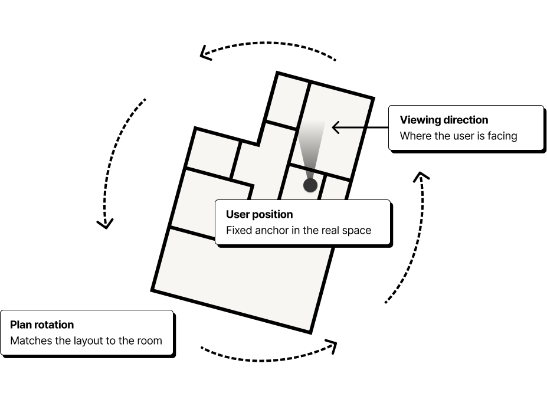

Designing Life-Sized Walkthroughs, an AR experience that let pros place a proposed design at full scale inside the client's existing space.
Plans and renders showed what the space might look like, but clients still had to picture what it would actually feel like around them. That is a difficult leap to make when so much depends on getting the decision right.
I can see the design, but I still can't picture being inside it.
It's hard to commit when I can't see how everything comes together.
The render looks great, but I still don't understand the scale.

The problem
Clients could see the design, but they still had to imagine being inside it.
Plans and renders showed what the space might look like, but clients still had to picture what it would actually feel like around them.
The goal
Create a memorable, immersive experience that would bring the proposal to life and help pros stand out with clients.
For many pros, this was their first AR experience. The challenge was helping them understand where they were in relation to the virtual space, and where the virtual space was in relation to the room around them.
There were very few established AR interaction patterns to learn from, so the experience had to be shaped through live testing and observation.
During live testing, people instinctively rotated the floor plan as soon as they picked up the device. When the same behavior kept repeating, it became clear that users were showing us how they expected the interaction to work.
Instead of teaching a new behavior, I proposed redesigning the experience around that instinct.
The goal wasn't to teach AR. It was to make it feel immediately familiar.
Users naturally tried to rotate the plan around their position, much like orienting a map. We kept their position fixed and let the plan rotate around them, matching the mental model they already brought to the experience.

Pros began by positioning themselves on the floor plan and choosing where the walkthrough would start.

In the camera view, pros scanned the room, aligned the virtual walls with the physical space, and confirmed the placement.


Once the walkthrough began, the interface receded so people could focus on the space itself.
Repeated internal tests and live client demos revealed that small interaction details determined whether placement felt intuitive and controllable. When people could understand where they were and where the experience would be placed without guidance, we knew the mental model was working.
The plan initially reacted too quickly to touch, making precise positioning difficult. We reduced the interaction sensitivity until rotating and moving the plan felt controlled.
The wall and floor overlays went through several color and opacity iterations. They needed to remain visible over the camera feed without hiding the physical room.
The rendered floor plan contained much more visual detail than the simple 2D version. Common location markers either disappeared into the plan or communicated the wrong meaning.


AR let clients view the proposal at full scale and understand how the finished space would come together around them.
Clients could respond to the space in real time, making design conversations more immediate and helping pros present their vision with greater confidence.
There were very few AR patterns to learn from, so I had to design without a playbook. That meant experimenting, testing, and trusting what people did naturally.
When no patterns exist, human behavior becomes the best reference.